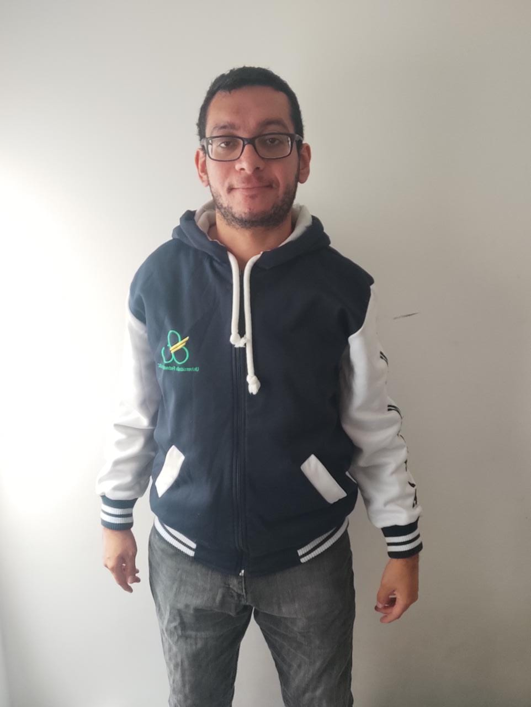
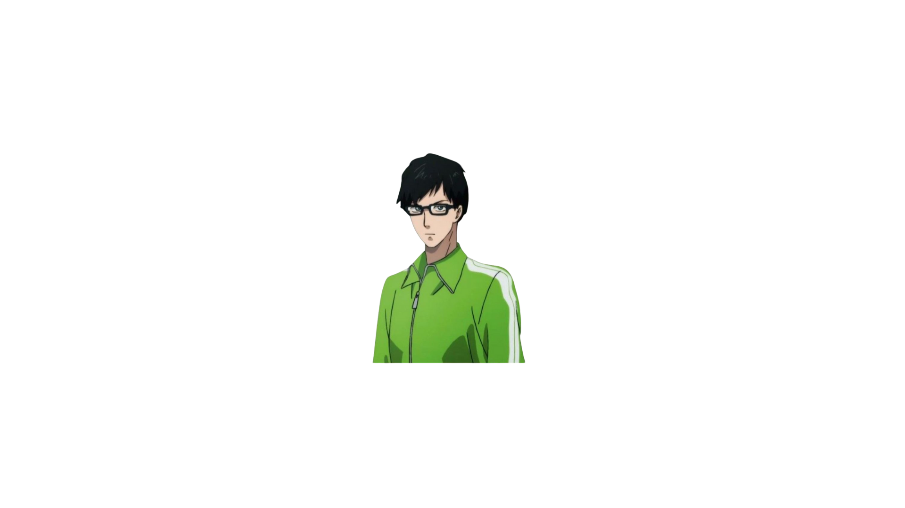
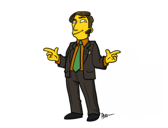
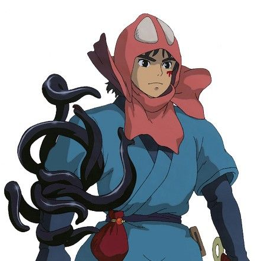
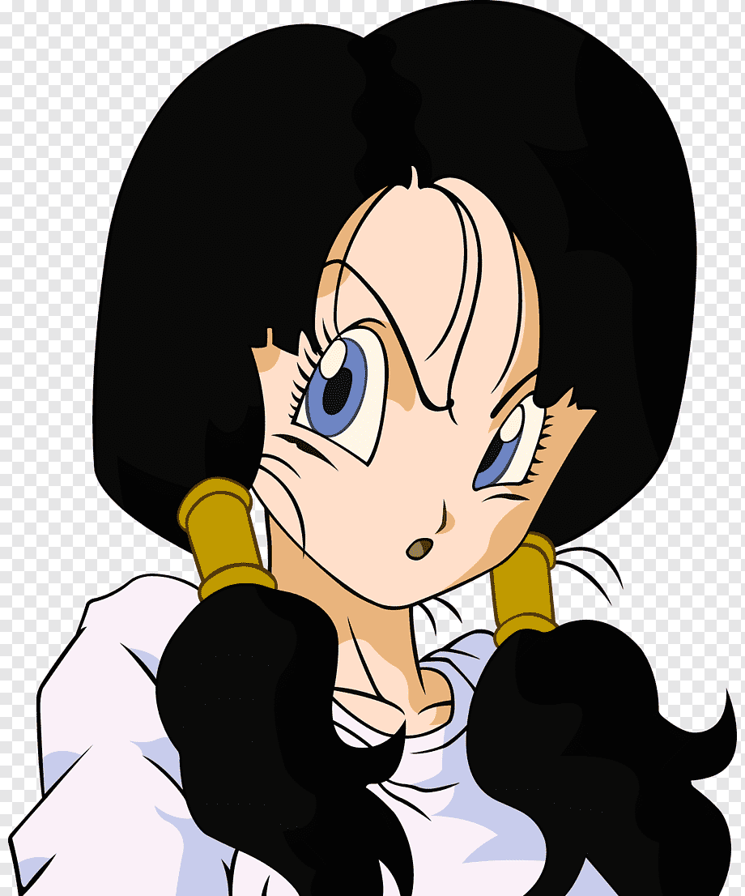

Atividade 1
Atividade 1
Imagens Originais:
Nessa parte do relatório, exibimos as fotos dos integrantes tiradas com a câmera profissional no laboratório.
As fotos mostram os integrantes Caleb, Gabriel, Vitor e Beatriz, respectivamente.



Avatar:




Imagens em P&B (ao passar o mouse):
Imagens em Menor Definição:
Imagens da Câmera: